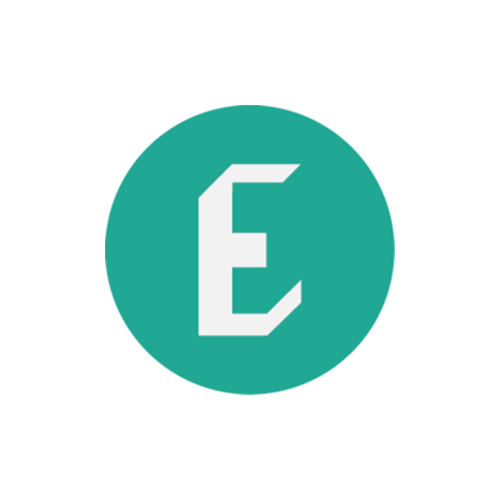

-

Brown EP
The Brown Entrepreneurship Program is the student-run entrepreneurship initiative on campus. We ignite the entrepreneurial community of College Hill through tailored programming and resources to help students create change.
Learn More -

Hack@Brown
The Swearer Center deepens Brown's mission to "serve the community, nation, and world" through innovative, thoughtful approaches to social change.
Learn More -

RISD E'Ship
Year-long program that accelerates Brown’s top commercial and technical student entrepreneurs through skills training, funding, the collective intelligence of the community, and complementary coursework.
Learn More
-

Swearer Center
The Swearer Center deepens Brown's mission to "serve the community, nation, and world" through innovative, thoughtful approaches to social change.
Learn More -

Swearer Sparks
Online platform for social change and storytelling where the Brown University community can spark new ideas and connections.
Learn More -

A Better World by Design
Each year, Better World by Design brings a global community of innovators to Providence, Rhode Island to reach across disciplines and unite under a common goal: building a better world. Presenters share engaging stories, workshops teach creative skills, and discussions re-frame perspectives.
Learn More -

Brown Venture Fellowship
BVF is a year-long program that accelerates Brown's top commercial and technical student entrepreneurs through skills training, funding, the collective intelligence of the community, and complementary coursework.
Learn More -

Synapse
Synapse brings 20 of Brown's and RISD's most exceptional engineers, designers, and aspiring entrepreneurs to visit an array of companies and build essential bridges with successful alumni entrepreneurs during their summer internships in San Francisco.
Learn More -

Embark Fellowship
Embark provide fellows with financial resources, structure, coaching, professional services, and connections with a network of alumni and local innovators necessary for recent grads to pursue their venture full time after graduation.
Learn More